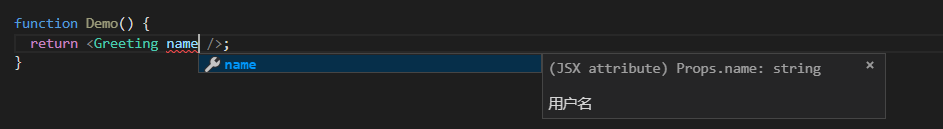

在React中使用TypeScript
基础部分
在 React 中使用TypeScript很大一部分原因是为了与JSX在语法提示上的呼应。
属性类型
javaScript方式：
import React from 'react';
function Greeting(props) {
return <div>Hello,{props.name}</div>;
}
此时如果我们使用<Greeting/>，JSX 并不会给出语法提示。
TypeScript方式：
import React from 'react';
interface Props {
/**
* 用户名
*/
name: string;
}
function Greeting(props: Props) {
return <div>Hello,{props.name}</div>;
}
此时，当我们使用Greeting组件时，会有语法提示，如下图：
